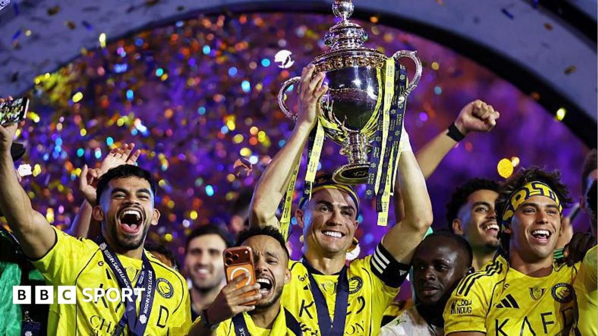

Desert Camel — 4 Years for 1 Saudi Title
Four years for one title: After joining Al Nassr in December 2022, Ronaldo needed a full four years to lift the Saudi Pro League title, which only arrived in the 2025-26 season. For comparison: Messi won a league cup a month after joining Inter Miami.
Three trophyless seasons: In 2022-23, 2023-24 and 2024-25, Ronaldo's personal goal tally stayed healthy, but Al Nassr kept finishing behind Al Hilal — second three times in a row. The numbers were his; the collective honours were not.
The penalty-share embarrassment: The penalty share in Ronaldo's Saudi goals stays stubbornly high. In some seasons nearly a third of his league goals came from the spot, with open-play efficiency far below his peak — the 'Penaldo' jibe writes itself.
The sting of the Messi contrast: Messi joined Inter Miami in July 2023 and by August had led them to the Leagues Cup, a title in his first month; Ronaldo ground through four years in Saudi before winning anything. In the Messi-Ronaldo rivalry, this became the comparison his fans found hardest to swallow.
Fourth time lucky: In the 2025-26 season, with Al Hilal ageing and injury-hit, Al Nassr capitalised to take the title. The press filed it under Ronaldo's luck of the draw rather than any proof of leadership — without the opponent's stumble, the 'perennial runner-up' tag might have stuck.
The strange celebration gesture: At the title celebrations Ronaldo reeled off a string of abstract gestures that Chinese fans dubbed the 'noodle-slicing move', once again turning himself into meme material. A title four years in the waiting brought not respect but a fresh wave of parody videos.
The desert truth: The so-called 'Saudi title' was won in a league of limited standard, and only after the rivals stepped aside. Four years in Saudi proved not greatness but a hero in his twilight — barely salvaging the last shred of face amid a chorus of doubt.